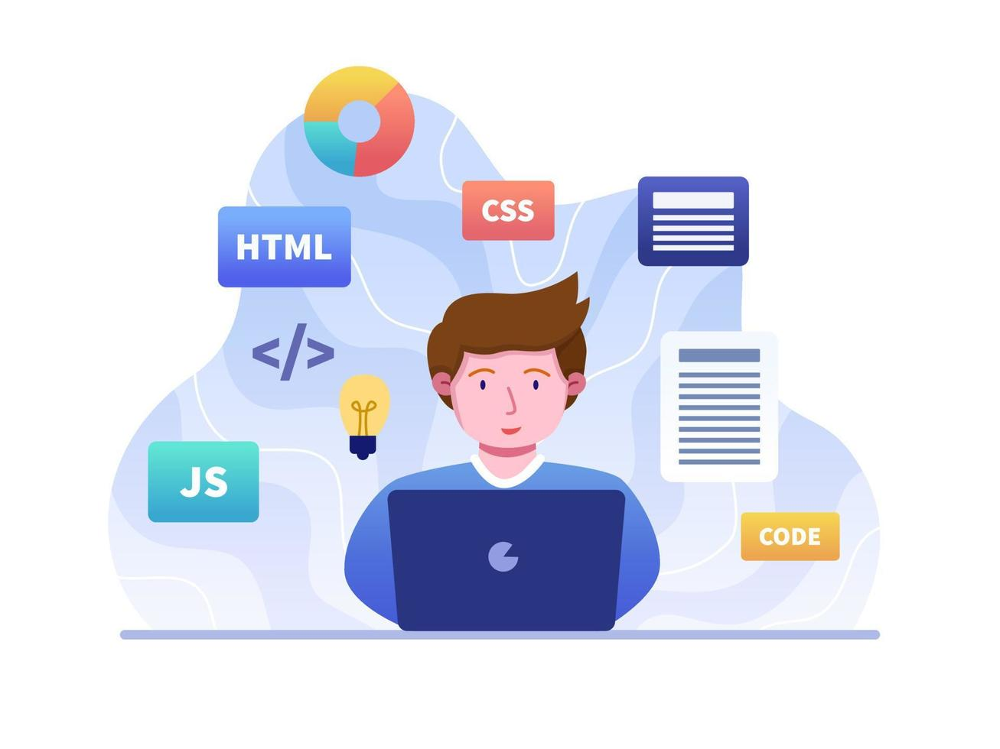

Codificación -- Desarrollo Continuo
En la fase de codificación, los desarrolladores crean el software siguiendo los requisitos definidos durante la planificación. Sin embargo, en DevOps, la codificación no es un proceso aislado que ocurre en solitario; es un proceso que está estrechamente vinculado con el resto de las fases del ciclo de vida.
Desarrollo colaborativo: Los desarrolladores trabajan en un entorno colaborativo y están conectados con el equipo de operaciones. Esta comunicación continua ayuda a entender las implicaciones de las decisiones de codificación para la infraestructura, los entornos de despliegue y la seguridad del sistema.
Control de versiones: En DevOps, la codificación se maneja con herramientas de control de versiones como Git. Cada desarrollador realiza cambios en ramas separadas y luego las fusiona en el repositorio principal. Esta estrategia asegura que las modificaciones se manejen de manera ordenada y que se pueda rastrear el historial de cambios fácilmente.

Mejores prácticas de desarrollo: Los desarrolladores también aplican estándares de codificación y patrones de diseño para garantizar que el código sea limpio, eficiente y seguro. Además, se promueve el uso de pruebas unitarias desde el inicio para detectar errores de forma temprana.